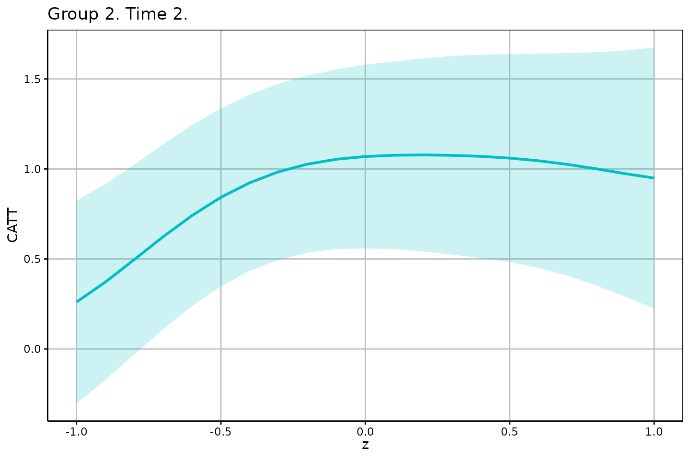
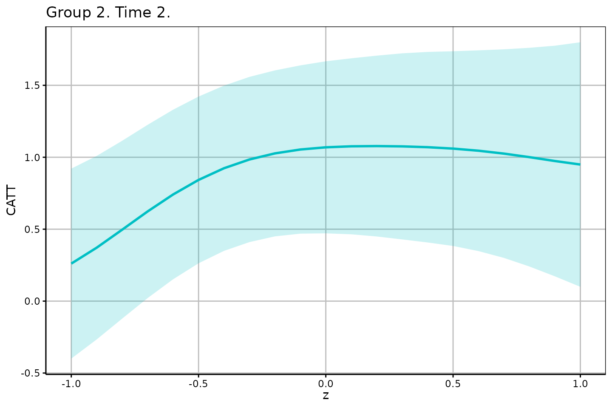
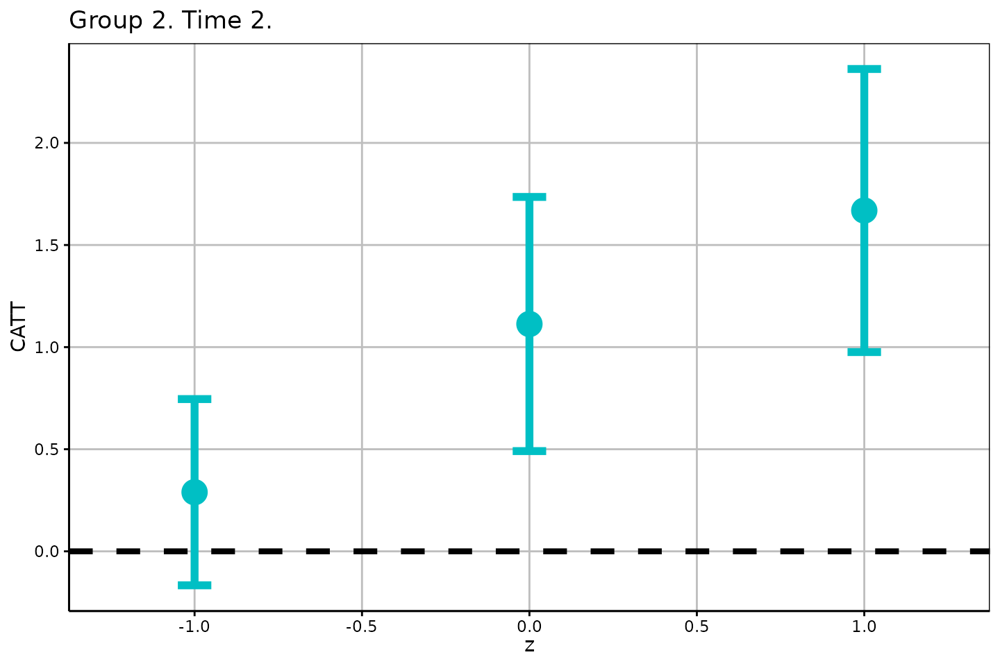

Getting Started with the didhetero Package
Shunsuke Imai (imai.shunsuke.57n@st.kyoto-u.ac.jp), Lei Qin (dannychin524@gmail.com), Takahide Yanagi (yanagi@econ.kyoto-u.ac.jp)
didhetero.RmdIntroduction
The didhetero package provides tools to construct doubly robust uniform confidence bands (UCB) for the group-time conditional average treatment effect (CATT) function given a pre-treatment covariate of interest in the staggered difference-in-differences (DiD) setup of Callaway and Sant’Anna (2021). The uniform inference procedures are developed by Imai, Qin, and Yanagi (2023) “Doubly Robust Uniform Confidence Bands for Group-Time Conditional Average Treatment Effects in Difference-in-Differences”.
Installation
Get the package from GitHub:
# install.packages("devtools") # if needed
devtools::install_github("tkhdyanagi/didhetero", build_vignettes = TRUE)Package Function
The didhetero package provides the following functions:
-
catt_gt_continuous(): Doubly robust UCB for the CATT function given a continuous covariate. -
catt_gt_discrete(): Doubly robust UCB for the CATT function given a discrete covariate.
Arguments
All package functions have the following arguments:
-
yname: The name of the outcome. -
tname: The name of the time periods. -
idname: The name of the cross-sectional IDs. -
gname: The name of the groups. “G = 0” indicates the never treated group. -
zname: The name of the scalar continuous covariate for which the group-time conditional average treatment effects are estimated -
xformla: A formula for the covariates to include in the model. It should be of the form~ X1 + X2.xformlashould includeznameas a covariate. -
data: The name of data.frame that contains the balanced panel data. -
zeval: The vector of the evaluation points z. -
gteval: The vector or matrix of the evaluation points g and t. If it is a vector, the first and second elements indicate g and t, respectively If it is a matrix, the first and second columns indicate g’s and t’s, respectively. Default isNULL, andgtevalis automatically constructed. -
control_group: Which units to use the control group. Options are “nevertreated” and “notyettreated”. Default is “nevertreated”. -
anticipation: The number of time periods before participating in the treatment where units can anticipate participating in the treatment and therefore it can affect their untreated potential outcomes. Default is 0. -
alp: The significance level. Default is 0.05. -
biters: The number of bootstrap iterations to use. Default is 1000, which is only applicable if bstrap isTRUE. -
uniformall: Boolean for whether or not to perform the uniform inference over \((g, t, z)\). Default isFALSE, and the uniform inference only over \(z\) is performed. -
cores: The number of cores to use for parallel processing. The number of available cores can be checked withparallel::detectCores(). Default is 1.
The catt_gt_continuous() function has the following
additional arguments:
-
bstrap: Boolean for whether or not to perform the multiplier bootstrap inference. Default isTRUE. If bstrap isFALSE, only the analytic critical value is used. -
porder: The polynomial order used for the second- and third-stage estimation. Options are 1 and 2, which correspond to the local linear and quadratic regressions, respectively. Default is 2. -
kernel: The kernel function used for the local polynomial regressions. Options aregaufor the Gaussian kernel andepafor the Epanechnikov kernel. Default isgau. -
bw: The scalar bandwidth used for the second- and third-stage estimation. Default isNULL, and the bandwidth is automatically selected.
Returns
The catt_gt_continuous() function returns a list that
contains the following elements:
-
Estimate: A data.frame that contains the following elements:-
g: A group. -
t: A period. -
z: An evaluation point. -
est: A doubly robust estimate for CATT. -
se: A standard error. -
ci1_lower: The lower bound of the UCB based on the analytical method. -
ci1_upper: The upper bound of the UCB based on the analytical method. -
ci2_lower: The lower bound of the UCB via multiplier bootstrapping. -
ci2_upper: The upper bound of the UCB via multiplier bootstrapping. -
bw: The bandwidth.
-
-
Figure1: A list that contains the ggplot elements for the analytic UCBs. -
Figure2: A list that contains the ggplot elements for the UCBs via multiplier bootstrapping.
The catt_gt_discrete() function returns a list that
contains the following elements:
-
Estimate: A data.frame that contains the following elements:-
g: The group. -
t: The period. -
z: The covariate value. -
est: The doubly robust estimate of CATT. -
se: The standard error. -
ci_lower: The lower bound of the UCB via multiplier bootstrapping. -
ci_upper: The upper bound of the UCB via multiplier bootstrapping.
-
-
Figure: A list that contains the ggplot elements for the UCB via multiplier bootstrapping.
Example: Continuous Covariate
We begin by generating artificial data using the
datageneration() function.
# Load the package
library(didhetero)
# Generate artificial data
# n: The number of cross-sectional units
# tau: The length of time series
# continuous: Generate a continuous (resp. discrete) covariate if it is TRUE (resp. FALSE).
set.seed(1)
data1 <- datageneration(n = 1000, tau = 4, continuous = TRUE)We can see the variables’ names in the dataset with:
head(data1)
#> id period Y G Z
#> 1 1 1 3.4181061 4 -0.6264538
#> 2 1 2 7.1550896 4 -0.6264538
#> 3 1 3 6.8578708 4 -0.6264538
#> 4 1 4 8.0158122 4 -0.6264538
#> 5 2 1 -0.4197104 0 0.1836433
#> 6 2 2 0.7126766 0 0.1836433We run the catt_gt_continuous() function to construct
the doubly robust UCB for the CATT function given a continuous covariate
\(Z\):
UCB1 <- catt_gt_continuous(yname = "Y",
tname = "period",
idname = "id",
gname = "G",
zname = "Z",
xformla = ~ Z,
data = data1,
zeval = seq(-1, 1, by = 0.1),
gteval = c(2, 2),
control_group = "nevertreated",
anticipation = 0,
alp = 0.05,
bstrap = TRUE,
biters = 1000,
porder = 2,
kernel = "gau",
bw = NULL,
uniformall = FALSE,
cores = 1)The estimation and uniform inference results are given by:
head(UCB1$Estimate)
#> g t z est se ci1_lower ci1_upper ci2_lower ci2_upper
#> 1 2 2 -1.0 0.2607043 0.2347429 -0.30241607 0.8238246 -0.39944739 0.9208559
#> 2 2 2 -0.9 0.3715774 0.2268069 -0.17250543 0.9156603 -0.26625640 1.0094113
#> 3 2 2 -0.8 0.4965231 0.2197910 -0.03072936 1.0237755 -0.12158028 1.1146264
#> 4 2 2 -0.7 0.6233448 0.2141259 0.10968214 1.1370075 0.02117287 1.2255168
#> 5 2 2 -0.6 0.7411066 0.2095935 0.23831666 1.2438965 0.15168088 1.3305323
#> 6 2 2 -0.5 0.8423519 0.2060495 0.34806367 1.3366401 0.26289281 1.4218110
#> bw
#> 1 0.4939719
#> 2 0.4939719
#> 3 0.4939719
#> 4 0.4939719
#> 5 0.4939719
#> 6 0.4939719The figure of the resulting UCB computed with the analytic critical value is given by:
UCB1$Figure1
#> $g2_t2
The figure of the resulting UCB via multiplier bootstrapping is given by:
UCB1$Figure2
#> $g2_t2
Example: Discrete Covariate
Data generation:
set.seed(1)
data2 <- datageneration(n = 1000, tau = 4, continuous = FALSE)Estimation and uniform inference:
UCB2 <- catt_gt_discrete(yname = "Y",
tname = "period",
idname = "id",
gname = "G",
zname = "Z",
xformla = ~ Z,
data = data2,
zeval = c(-1, 0, 1),
gteval = c(2, 2),
control_group = "nevertreated",
anticipation = 0,
alp = 0.05,
biters = 1000,
uniformall = FALSE,
cores = 1)Results:
head(UCB2$Estimate)
#> g t z est se ci_lower ci_upper
#> 1 2 2 -1 0.2895654 0.1844509 -0.1664400 0.7455708
#> 2 2 2 0 1.1131381 0.2517058 0.4908630 1.7354132
#> 3 2 2 1 1.6688524 0.2803515 0.9757582 2.3619466
UCB2$Figure
#> $g2_t2
References
Callaway, B., & Sant’Anna, P. H. (2021). Difference-in-differences with multiple time periods. Journal of Econometrics, 225(2), 200-230. Link
Imai, S., Qin, L., & Yanagi, T. (2023). Doubly Robust Uniform Confidence Bands for Group-Time Conditional Average Treatment Effects in Difference-in-Differences. arXiv preprint arXiv:2305.02185. Link